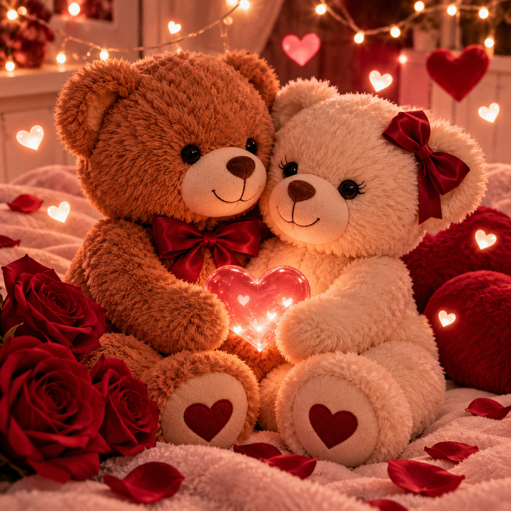

Oi, Nathally ❤️
Preparei um cantinho especial só para você. Cada detalhe aqui é uma forma de te lembrar o quanto você é importante para mim.

Tenho uma carta para você…
Uma música para acompanhar ❤️
Escolhi “Die With A Smile”, da Lady Gaga com Bruno Mars, para tocar enquanto você lê minha declaração.
Nathally, meu amor…
Nathally, hoje completa 1 mês que eu pedi sua mão em namoro, e saiba que eu sou o homem mais feliz desse mundo não apenas por ter te conhecido e sim por ter conhecido um melhor lado de mim que só mostrou depois que eu te conheço,
peço desculpas por que não tenho uma foto pra gente postar junto sei que as vezes posso dar mancada e não ser o melhor namorado desse mundo, mais eu amo muito e muito mesmo você,
mais também prometo que durante vários anos iremos ter muitas fotos junto e como hoje não tenho uma para postar com você, vim aqui através de uma carta de declarar,
você é a mulher da minha vida a mulher que faz eu alcançar meu melhor de mim e cada segundo ao seu lado é muito importante para mim e eu amo você
Que seja só o começo… ❤️
Feliz nosso primeiro mês, Nathally. Que venham muitos outros meses, anos, fotos, abraços, risadas e momentos juntinhos. Eu amo você! ❤️